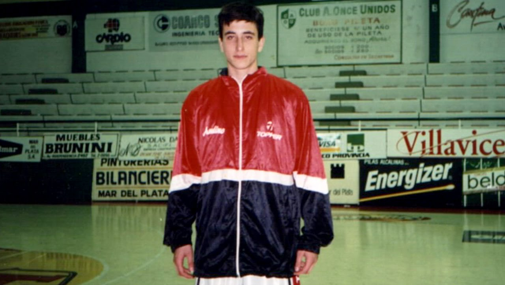
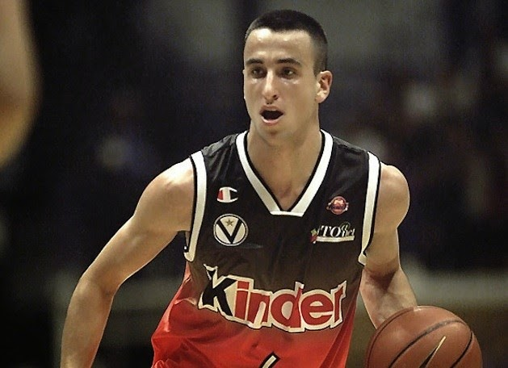
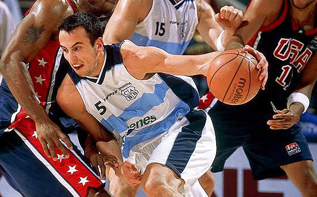

HISTORIA
Emanuel David Ginóbili nació en Bahía Blanca el 28 de julio de 1977, más conocido como Manu Ginóbili, es un ex jugador argentino de básquetbol, considerado por muchos especialistas, deportistas y entrenadores de este deporte como el mejor jugador de América Latina, uno de los cien mejores y más influyentes de la historia de la NBA y uno de los mejores provenientes de la FIBA de todos los tiempos. Jugaba en la posición de escolta y formó parte de los San Antonio Spurs de la NBA durante 16 temporadas, desde 2002 hasta 2018, hasta que el 27 de agosto de 2018 anunció su retiro profesional del basquet.
En 1995, Ginóbili se trasladó desde Bahía Blanca a la ciudad de La Rioja para jugar en el Club Andino. Allí debutó en la Liga Nacional de Básquet, el 29 de septiembre de ese mismo año, frente a Peñarol de Mar del Plata. Esa temporada fue nombrado el mejor debutante de la Liga Nacional. Al año siguiente, volvió a su ciudad natal para jugar en el Club Estudiantes.33 En 1997 fue seleccionado MVP del Juego de las Promesas Mar del Plata y en esta misma temporada recibió el premio al mayor progreso de la LNB.
En 1997 se dirigió a Italia para jugar dos temporadas en el Basket Viola Reggio Calabria.1 Durante ese período, en 1999, fue elegido en segunda ronda del draft de la NBA por San Antonio Spurs con el puesto nº 57. Sin embargo, decidió quedarse en Europa tras una oferta realizada por parte del Kinder Bolonia para jugar dos temporadas. Aquí logró consagrarse como uno de los mejores jugadores del viejo continente, ya que en este tiempo ganó con su equipo dos Copas de Italia (2001 y 2002, siendo el MVP de la segunda), una liga italiana (2001, siendo también el MVP de la misma) y una Euroliga (2001), siendo el MVP de las finales.1 También fue seleccionado para jugar el All-Star en tres ocasiones.
En 2002 condujo a la selección argentina a obtener la medalla de plata en el Mundial de Indianápolis, formando parte del quinteto ideal del campeonato. Jugó todos los partidos del torneo como titular a excepción de la final en la que pudo participar escasos minutos debido a un esguince en el tobillo que sufrió en las semifinales al pisar al alemán Dirk Nowitzki. En este torneo, la albiceleste fue la primera selección en derrotar a Estados Unidos desde que está formada por jugadores de la NBA, cortando una racha de 58 partidos consecutivos ganados desde 1992 después del Campeonato Mundial FIBA 2002 en 2002 llegó a San Antonio Spurs y jugó su primer partido en la NBA el 29 de octubre frente a Los Angeles Lakers, partido donde anotó 7 puntos (3 de 9 tiros de campo, incluido un triple de cuatro intentos), capturó dos rebotes, dio tres asistencias, robó cuatro balones, puso un tapón, perdió una vez el balón y cometió tres faltas personales. En su temporada de rookie (novato) promedió 7,6 puntos, 2,3 rebotes, 2 asistencias y 1,4 robos de balón ayudando a su equipo a salir campeón, logrando su primer anillo en su primera temporada. En su primer año, Ginóbili se desempeñó como escolta suplente del equipo. Pasó la primera parte de la temporada lesionado, y encontró dificultades para adaptarse a la NBA por su estilo de juego. Después de su lesión, Ginóbili ganó el premio de rookie del mes en marzo en la Conferencia Oeste, y fue nombrado en el segundo equipo de rookies al final de la temporada
Ya en 2004, en los Juegos Olímpicos de Atenas, promediando 19.3 puntos por partido lideró a su equipo para ganar la medalla de oro, siendo el MVP del torneo.33 Además sumó una media de 4.0 rebotes y 3.25 asistencias. Logró un 70.8% de efectividad en dobles y un 40.5 en triples. En dicho torneo, Manu se convirtió en el héroe del equipo argentino durante el primer juego, contra Serbia y Montenegro, anotando los dos puntos salvadores para Argentina a escasos segundos del final70 y dándole la victoria por apenas un punto a la selección argentina y tomándose revancha de la final perdida en 2002 ante el equipo europeo. La selecciòn Argentina haría historia nuevamente derrotando una vez mas, esta vez en semifinales, al combinado norteamericano liderado por figuras como Allen Iverson, Tim Duncan y Stephon Marbury, y que también contaba con unos jóvenes Lebron James y Dwayne Wade, por 89-81 con 29 puntos de Ginóbili.Finalmente Argentina ganarìa la Medalla Dorada en la final ante Italia.
La temporada 2005-06 estuvo plagada de lesiones para Ginóbili, sufriendo lesiones de pie y tobillo que obstaculizaron su capacidad de jugar. Jugó 65 partidos en la temporada regular, pero se produjo un pequeño descenso en sus estadísticas en comparación con la temporada anterior. Durante los playoffs, tuvo un juego excelente, pero no pudo evitar que los Spurs fueran eliminados por los Dallas Mavericks en Semifinales de la Conferencia. Durante la temporada promedió 15,1 puntos. En la temporada 2006-07, Ginóbili ayudó a los Spurs a conseguir el mejor récord de la temporada. Sus estadísticas fueron idénticas a los números de su exitosa campaña 2004-05, a pesar de jugar sólo 36 de 75 partidos, su segundo pero nivel desde su llegada a San Antonio. En los playoffs de 2007 derrotaron a Denver Nuggets, Phoenix Suns y Utah Jazz, antes de barrer a Cleveland Cavaliers para ganar su tercer anillo, cuarto para San Antonio.36 Fue una temporada histórica para el baloncesto argentino, ya que fue campeón junto a su compañero de selección Fabricio Oberto.
El 6 de noviembre de 2007, en un partido que disputaron los Spurs contra Miami Heat y que ganaron por 88-78, Ginóbili, con 25 puntos, consiguió sobrepasar los 5.000 puntos en la NBA, contando únicamente temporada regular. En la temporada 2007-08, sus promedios ascendieron a 19,5 puntos en 31 minutos de juego por partido. Ginòbili arrasó en la votación del Mejor Sexto Hombre de la NBA.logrando 615 puntos sobre un total de 620 posibles. Dicho premio se consideró en su momento como injusto con respecto a los demás aspirantes, ya que Ginóbili, si bien arrancó más de la mitad de los partidos de temporada como suplente (requisito indispensable para disputar el título de sexto hombre), era considerado por todos como un jugador clave que salía desde la banca por estrategia de Popovich.
En 2008, participó del equipo argentino que logró la medalla de oro en el FIBA Diamond Ball de aquel año. A su vez, fue actor preponderante de la albiceleste en los Juegos Olímpicos en Pekín, siendo el abanderado de la delegación de su país en la ceremonia de inauguración de éstos juegos. Tras liderar al seleccionado en la ronda preliminar y en la victoria sobre Grecia en cuartos de final, Ginóbili se resintió de una lesión en el tobillo durante el primer cuarto de la semifinal contra Estados Unidos, que Argentina perdió por 20 puntos. Sin la participación de Ginóbili, Argentina obtuvo la medalla de bronce al vencer a Lituania 87 a 75 y ascendió al primer lugar del ranking FIBA, siendo la primera vez en la historia que Estados Unidos era despojado de dicha posición.
En la temporada 2010-11, Popovich incluye como titular a Ginóbili en 79 de sus 80 partidos disputados en la temporada regular. En consecuencia Ginóbili fue el mejor jugador de los Spurs41 y uno de los mejores de la NBA en ese año (octavo en la clasificación del MVP),42 juega su segundo All-Star Game43 y es elegido en el tercer quinteto de la NBA.44 Pero sufre una lesión en el último partido de la temporada. Pese a jugar semi-lesionado y promediar 20,6 puntos y 4,2 asistencias durante la serie ante Memphis Grizzlies, incluyendo 33 puntos en el quinto juego,45 su equipo queda eliminado en primera rueda en 6 partidos.
El 11 de julio de 2013, Ginóbili volvió a firmar con los Spurs por un contrato de dos años. En la temporada 2013-14, los Spurs obtuvieron el mejor registro de la liga, 62-20. Ginóbili terminó tercero en la votación para el Sexto Hombre del Año. En el Juego 1 de las Finales de la Conferencia Oeste contra los Thunder, el trío Duncan-Ginóbili-Parker ganó su partido número 110 en los playoffs, igualando a Magic Johnson, Kareem Abdul-Jabbar y Michael Cooper de Los Angeles Lakers. Los Spurs llegaron nuevamente a las Finales de la NBA, donde enfrentaron a Miami Heat por segundo año consecutivo. Esta vez, dominaron la serie sin problemas, ganando 4-1 para levantar el quinto campeonato de la franquicia;48 Ginóbili ganó su cuarto anillo como Spur.
En las últimas temporadas se mutiplicaron los elogios y reconocimientos por parte del mundo de la NBA hacia un ya veterano Ginóbili, que sumando menos minutos que en su plenitud, continuaba siendo factor decisivo de los Spurs en momentos clave. Luego de cuatro años regresó al combinado nacional para disputar su último torneo: los Juegos Olímpicos de Río de Janeiro 2016. En el mismo, el equipo quedó eliminado por Estados Unidos en cuartos de final finalizando así su ciclo en la Selección nacional. Su retiro fue emotivo, recibiendo la ovación de todo el estadio y el reconocimiento de los jugadores estadounidenses y hasta de la propia NBA Ginóbili firma un nuevo contrato por dos temporadas con los Spurs en 2017 y disputa su 22º temporada como basquetbolista profesional, 16º en la NBA, a los 40 años de edad. En noviembre de 2017 jugó su partido número 1000 en fase regular de la NBA y el 27 de agosto de 2018 a los 41 años anunció su retiro